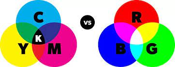

Niet allen cijfers en letters worden in de computer gecodeerd. Kleuren worden er ook in gecodeerd, dat gaat door de kleurmodellen. En een afbeelding bestaat uit heel veel pixels. En pixels staat voor picture en element. Als je in een foto inzoemt kan je zien dat het bestaatuit allemaal kleinen pixels. De belangrijkste kleurmodellen zijn het CMY-model en het RGB-model. Het RGB-model wordt vaak gebruikt met albeeldingen en het CMY-model wordt gebruikt voor het afdrukken van foto's zoals iets van een printer
Van alle lichtstralen van de zon is slechts een klein deel zichtbaar voor het menselijke oog. Het zichtbare licht kan worden beschreven met de drie primaire kleuren rood, groen en blauw (RGB). Deze kleuren geven samen wit licht en hierdoor worden ze ook wel additieve kleuren genoemd.
Het CMYK-model wordt gebruikt voor het beschrijven van kleuren van objecten die zelf geen licht geven, maar die het licht van andere bronnen weerkaatsen. Cyaan, magenta en geel worden daarom gebruikt voor fullcolor drukwerk en kleurenafdrukken. Hoe meer van een kleur wordt gebruikt, hoe donkerder de kleur wordt. Omdat cyaan, magenta en geel licht onttrekken aan de primaire kleuren rood, groen en blauw, worden ze ook wel subtractieve kleuren genoemd.